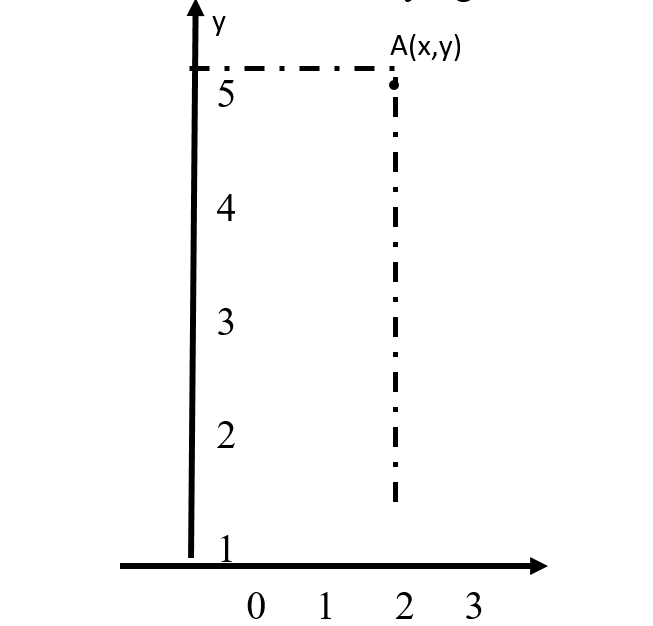
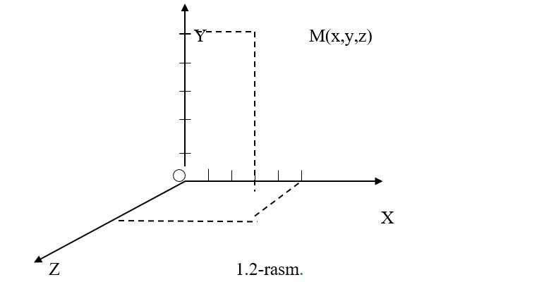

1-MA’RUZA. Kirish. Moddiy nuqta kinematikasi
Reja:
“Fizika” fani va uning boshqa fanlar bilan aloqasi.
Moddiy nuqta kinematikasi. Mexanik harakat.
Tezlik, tezlanish. To‘g‘ri chiziqli harakat.
Egri chiziqli harakat.
Qisqacha xulosalar.
Tayanch iboralar:Fizika, eksperiment, tadqiqot, gipoteza, moddiy nuqta, kinematika, mexanika, mexanik harakat, tezlik, tezlanish,egri chiziqli harakat, normal tezlanish, tangensial tezlanish.
Biz yashab turgan, hayot kechirayotgan gallaktikamiz (Quyosh va uni atrofida aylanayotgan to‘qqizta planeta va yulduzlar sistemasi) juda ko‘p asrlardan beri mavjud. Yerimiz, tabiatimiz, yetti osmonimiz gallaktikaning bir bo‘lagi bo‘lib, tirik organizmlar va odamzod maskani sifatida paydo bo‘ldi. Tabiat hodisalarini, jarayonlarini va qonunlarini o‘rganish juda qadimdan boshlangan. Tabiat sirlarini o‘rganish, qonunlarini ochish asosida insoniyat o‘zining turmush sharoitini,yashash imkoniyalarini yaxshilab bordi. Tabiat sirlarini o‘rganish o‘z navbatida, o‘z zamonidagi fikrli, mulohazali, ilg’or kishilarni o‘ziga tortdi. Qadimgi Yunonistonda tabiat hodisalarini o‘rganuvchi tabiatshunoslik fani vujudga keldi.
Fizika Yunoncha so‘z bo‘lib, “phusis”- tabiat degan maononi anglatadi. Fizika fanini birinchi bo‘lib, qadimgi Yunon mutafakkiri Aristotel (eramizdan avalgi 384-322 yil) o‘zining kitoblarida bayon etgan. O‘sha davrda fizikaning tarkibiga hozirgi ximiya, astronomiya, biologiya, geologiya deb nom olgan bir qator tabiiy fanlar kirgan. Keyinchalik, ular mustaqil fanlar bo‘lib ajralib chiqqan, lekin ular o‘rtasida keskin chegara yo‘q,ular doimo bir-birlarini to‘ldirib hamisha aloqada bo‘ladilar. Bu gaplarni isboti sifatida tabiatdan yangi-yangi hodisalarning kashf qilinishi va ularning amalda qo‘llanishi natijasida fizikaviy-ximiya, astrofizika, geofizika, biofizika kabi birlashgan fanlarning vujudga kelishini ko‘rsatish mumkin. Shuning uchun, fizika – barcha tabiiy va amaliy fanlarning poydevoridir deyish mumkin.
Fizika fanining boshqa fanlar bilan aloqasi ikki tomonlamadir: Bu fanlar fizika asboblari yordamida taraqqiy qilib, yangi fan cho‘qqilarini egallashsa, o‘zining yutuqlari bilan fizikani ham boyitadi va uni oldiga yangi vazifalar, yangi mukammal asboblar yaratishni qo‘yadi, shu tariqa o‘zi ham, fizika ham rivojlanib boradi.
Masalan: astranomlarga yangi teleskoplarni yaratib berish, osmon jismlarini mukammalroq o‘rganishga, biologlarga elektron mikroskoplarni yaratilishi, hayotni qanday paydo bo‘lish sirini ochilishiga olib keldi, ximiklarga spektroskopni yasab berilishi davriy sistemadagi 24 ta elementni kashf etilishiga sabab bo‘ldi va hokazo.
Fizika fani rivojlanishida buyuk o‘zbek mutafakkir olimlarimizning boy ilmiy meroslarni ham ahamiyati katta bo‘lgan.Ayniqsa, Abu Rayhon Beruniyning falsafiy qarash-lari, dunyo xaritasini yaratishdagi urinishlari “Amerika”-qit’asi borligini bashorati (Kolumbning Amerikani ochishida asos bo‘lgan), shuningdek, Ahmad Al-Farg‘oniyning yer meridianini o‘lchab chiqishlari, tutash idish qonunidan foydalanib Nil daryosi suvini o‘lchab beradigan qurilmani yaratgani (u hozirgacha saqlanganligi), Al-Xorazmiy bilan birgalikda osmon jismlarini o‘rganishdagi tadqiqotlari hozirgacha ham o‘z qiymatini yo‘qotganicha yo‘q.
Bizning atrofimizni o‘rab olgan moddiy dunyo doimo uzluksiz harakatda bo‘lgan materiyadan iboratdir. Materiya ikki ko‘rinishda namoyon bo‘ladi:
1) Modda ko‘rinishda, masalan, qattiq, suyuq, gazsimon va plazma holatidagi jismlar;
2) Maydon ko‘rinishida, masalan, gravitatsion maydon, elektromagnit maydon, yadroviy kuchlar maydoni va boshqalar.
Fizika fani materiyaning tuzulishini va materiya harakatining eng oddiy ko‘rinishidan tortib, to eng umumiy ko‘rinishlarigacha o‘rganadi: mexanik, atom-molekulyar, gravitatsion, elektromagnit, atom va yadro ichidagi jarayonlar.
Harakat deganda, materiyaning tabiatda bo‘ladigan barcha o‘zgarishlari, bir turdan ikkinchi turga aylanishlari, barcha jarayonlar tushuniladi.
Fizikaviy tadqiqot usullari. Fizika hodisalarini tabiat sharoitida o‘rganish kuzatishdan boshlanadi. Hodisalarni sunoiy ravishda laborotoriya sharoitida amalga oshirib, tajriba o‘tkazishni eksperiment deb ataladi. Eksperimentni kuzatishga qaraganda, bir qator afzal tomoni bor, chunki tabiiy sharoitlarda biror hodisa ro‘y berishi uchun sutkalab, oylab, hatto, yillab kutishga to‘g‘ri keladi. Laboratoriya sharoitida esa bu hodisani hohlagan qisqa vaqtda amalga oshirish mumkin.
Kuzatish va tajriba natijalaridan hodisani tushuntirish uchun mulohaza va mantiqiy umumlashtirishlar asosida gipoteza (ilmiy faraz) lar yaratiladi.
Agar gipoteza eksperimentda tasdiqlansa, u xaqiqiy fizik nazariyaga aylanadi, aks holda gipoteza sinovdan o‘tmagan gipotezaligicha qoladi.
Fizik nazariya atrofimizda sodir bo‘layotgan bir qator hodisalarni, ularning mexanizmi va qonuniyatlarini tushuntira olishi kerak. Eksperiment asbob - uskunalarini zamonaviylashuvi va o‘sishi bilan yangi hodisalar kashf etiladi, bu esa o‘z navbatida yangi fizik nazariyalar yaratilishini taqozo qiladi.
Fizik kattaliklarni o‘lchash uchun o‘lchov birliklari tanlab olinadi. O‘lchash mumkin bo‘lgan fizik kattaliklarning birliklari etalon (namuna) larga ega.Fizik kattaliklarning qiymati deganda, mazkur kattalik etalondan (eki uning nusxasidan) necha marta faqlanishini ko‘rsatadigan son tushuniladi. Har bir fizik kattalik o‘lchov birligini boshqa fizik kattaliklarga bog‘liq bo‘lmagan holda mustaqil tanlash mumkin.
Masalan, ettita fizik kattalik uchungina, o‘lchov birligi ixtiyoriy tanlanadi. Bu fizik kattaliklarning o‘lchov birliklari asosiy birliklar deb yuritiladi. Qolgan barcha fizik kattaliklarning o‘lchov birliklari bu kattaliklarni asosiy kattaliklar bilan bog‘lovchi qonunlar (formulalar) asosida tanlanadi. Bunday kattaliklarning o‘lchov birliklari hosilaviy birliklar deb yuritiladi.
1960-yil oktyabrda Xalqaro sistema qabul qilindi.
1961-yilning 24-avgustida sobiq Sovet Ittifoqida “Sistema Internatsionalnaya” so‘zlarini bosh harflari bo‘yicha XBS (“Es-I”deb o‘qiladi) tarzda belgilangan birliklar sistemasi tasdiqlandi. XBS da yettita asosiy birlik va ikki qo‘shimcha birlik qabul qilingan:
Asosiy birliklar
Uzunlik, metr (m). Kripton -86 atomining 2r10 va 5d5 sathlari orasida o‘tishga mos bo‘lgan nurlanishning vakuumdagi to‘lqin uzunligidan 1650763,73 marta katta bo‘lgan uzunlik 1 metr deb qabul qilingan.
Massa, kilogrramm (kg). Kilogrammning xalqaro prototipining massasini 1 kilogramm deb qabul qilingan.
Vaqt, sekund (s). Seziy – 133 atomi asosiy holatining ikki o‘ta nozik sathlari orasidagi o‘tishga mos bo‘lgan nurlanish davridan 9192631770 marta katta vaqt 1 sekund deb qabul qilingan.
Elektr tokining kuchi, Amper (A).
1 Amper tok vakuumdagi bir- biridan 1m masofada joylashgan ikki parallel cheksiz uzun, lekin kesimi juda kichik to‘ri o‘tkazgichlardan o‘tganda o‘tkazgichning har bir metr uzunligiga 2*10-7 N kuch taosir qiladi.
Termodinamik temperatura, Kelvin (K).
Suvning uchlanma nuqtasini xarakterlovchi termodinamik temperaturaning 1/273,16 ulishi 1 kelvin deb qabul qilingan.
Modda miqdori, mol(mol).
Uglerod -12 atomining 0,012 kg massasidagi atomlar soniga teng strukturaviy element (masalan, atom, molekula yoki boshqa zarra)lardan tashkil topgan sistemadagi moddaning miqdori 1 mol deb qabul qilingan.
Yorug‘lik kuchi, kandela (kd).
540 . 1012 Gs chastotali monoxromatik nurlanish chiqarayotgan manba yorug‘ligining enYergetik kuchi 1/683 . Vt/sr ga teng bo‘lgan yo‘nalishdagi yorug‘lik kuchi 1 kandela deb qabul qilingan.
Qo‘shimcha birliklar
Yassi burchak, radian (rad).
Aylanda uzunligi radiusga teng bo‘lgan yoyni ajratadigan ikki radius orasidagi burchak 1 radian deb qabul qilingan.
Fazoviy burchak, steradian (sr).
Uchi sfera markazida joylashgan va shu sfera sirtidan radius kvadratiga teng yuzli sirtni ajratuvchi fazoviy burchak 1 steradian deb qabul qilingan.
Hosilaviy birliklar
Tezlik, metr taqsim sekund (m/s).
1m/s tezlik bilan to‘g‘ri chiziqli tekis harakat qilayotgan moddiy nuqta 1s davomida 1m masofaga ko‘chadi.
Tezlanish, metr ,taqsim sekunt kvadrat (m/s2 )
1m/s2 tezlanish bilan to‘g‘ri chiziqli tekis o‘zgaruvchan harakat qilayotgan moddiy nuqtaning tezlanishi 1s da 1m/s2 ga o‘zgaradi.
Impulps, kilogramm - metr taqsim sekund (kg.m/s). 1kg.m/s -1m/s tezlik bilan harakatlanayotgan 1kg massali jismning impulpsi
Kuch, Nyuton (N).
1N- massasi 1kg bo‘lgan jismga taosir qilib, unga ta’sir yo‘nalishida 1m/s2 tezlanishi beradigan kuch.
Kuch impulsi, Nyuton sekund (N.S).
1N.s-1s davomida ta’sir etuvchi 1N kuchning impulsi.
Moddiy nuqta kinematikasi. Mexanik harakat.
Vaqt o‘tishi bilan jismning fazodagi vaziyatini boshqa jismlarga nisbatan o‘zgarishi – mexanik harakat deb ataladi. Jismlarni mexanik harakatini o‘rganuvchi fizikaning birinchi bo‘limini “Mexanika” deb ataladi, u uch qismdan iboratdir.
1.Kinematika
2.Dinamika
3.Statika
Kinematika – jism harakatini shu harakatni yuzaga keltiruvchi sabablarni hisobga olmasdan o‘rganadi.
Dinamika – jism harakatini shu harakatni yuzaga keltiruvchi sabablarni hisobga olgan holda o‘rganadi.
Statika – jismlarni muvozanat shartlarini o‘rganadi.
Mexanika qonunlari asosida jismning istalgan paytdagi vaziyati aniqlanadi. Unda soddalashtrish maqsadida jismni moddiy nuqta deb qaraladi. Moddiy nuqta deb, geometrik o‘lchamlari va shakli o‘rganilayotgan sharoitda hisobga olinmaydigan va massasi bir nuqtaga to‘plangan jismga aytiladi. Har qanday jismni muayyan sharoitda moddiy nuqta deb qarash mumkin.
Jismning yoki moddiy nuqtani vaziyatini boshqa jismga nisbatan aniqlab, sanoq jismni tanlab olish kerak. So‘ngra uning biror nuqtasi orqali kordinata o‘qlari o‘tkazilib jismni ixtiyoriy nuqtasini fazodagi vaziyati kordinata o‘qlari orqali aniqlanadi.
Agar jism tekislikda harakatlanayotgan bo‘lsa:

1.1-rasm.
Agar jism harakati fazoga nisbatan aniqlanayotgan bo‘lsa:
